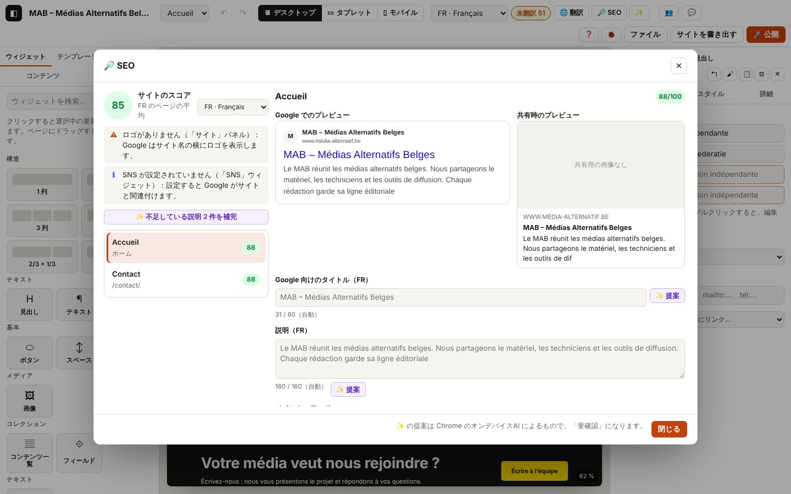

6. SEO

このページの内容
以下のログ抜粋はフランス語で記録したものです。コードとレベルはどの言語でも同じです（実際のログのメッセージは表示言語で出ます）。
「🔎 SEO」ウィンドウは、各ページを Google 向けに 100 点満点で採点し、検索結果や SNS での見え方をプレビューし、直すべき点を一覧にします。また、オンデバイスAI（第7章）にタイトル、説明、キーワード、代替テキストを提案させることもできます。
ログのドメイン：seo.*（ウィンドウ、スコア、フィールド、適用した提案、まとめての処理）。AI の呼び出しそのものは ai.*（第7章）に記録されます。
6.1 SEO を開いてスコアを読む
目的：サイトの現状と、最初に改善すべきページを知ること。
手順
- 上部バー：「🔎 SEO」（または Ctrl+K で「SEO」）。
- 左側：サイトのスコア（選んだ言語での全ページの平均）、サイト全体に関わる指摘、ページの一覧とそれぞれのスコア。
- ページをクリックします。スコアの横のメニューで、分析する言語を切り替えます。
表示される内容：色付きのスコア（85 以上は緑、60 以上はオレンジ、それ未満は赤）、Google のプレビューと共有時のプレビュー、指摘の一覧 ✗ ⚠ • ℹ ✓。
期待されるログ（journaux/seo-ouvrir-regler.log）
技術的な詳細：想定されるログ
14:29:45.562 +4.41s DEBUG seo.analysis Analyse : page 88/100, site 85/100 {"pageId":"p_eplwyjrb","lang":"fr","page":88,"site":85,"points":{"good":2,"warn":2,"info":1},"sitePoints":{"warn":1,"info":1},"words":86,"imagesNoAlt":0}
…
14:29:45.573 +4.42s INFO seo.open Fenêtre Référencement : note du site 85/100 {"lang":"fr","pageId":"p_eplwyjrb","pages":2,"site":85,"page":88,"sitePoints":{"warn":1,"info":1},"pagePoints":{"good":2,"warn":2,"info":1},"missingDesc":2,"baseUrl":true}
14:29:45.663 +4.51s DEBUG seo.page Page choisie : /contact/ (88/100) {"pageId":"p_math7fl6","score":88,"lang":"fr"}
14:29:45.664 +4.51s DEBUG seo.analysis Analyse : page 88/100, site 85/100 {"pageId":"p_math7fl6","lang":"fr","page":88,"site":85,"points":{"good":2,"warn":2,"info":1},"sitePoints":{"warn":1,"info":1},"words":13,"imagesNoAlt":0}
…
14:29:45.725 +4.57s DEBUG seo.analysis Analyse : page 82/100, site 82/100 {"pageId":"p_math7fl6","lang":"fr","page":82,"site":82,"points":{"warn":3,"good":1,"info":1},"sitePoints":{"warn":1,"info":1},"words":13,"imagesNoAlt":0}
…
14:29:45.737 +4.58s DEBUG seo.analysis Analyse : page 82/100, site 82/100 {"pageId":"p_math7fl6","lang":"fr","page":82,"site":82,"points":{"warn":3,"good":1,"info":1},"sitePoints":{"warn":1,"info":1},"words":13,"imagesNoAlt":0}
…
14:29:45.934 +4.78s DEBUG seo.analysis Analyse : page 82/100, site 82/100 {"pageId":"p_math7fl6","lang":"fr","page":82,"site":82,"points":{"info":2,"warn":3,"good":1},"sitePoints":{"warn":1,"info":1},"words":13,"imagesNoAlt":0}
…
14:29:46.132 +4.98s DEBUG seo.analysis Analyse : page 82/100, site 82/100 {"pageId":"p_math7fl6","lang":"de","page":82,"site":82,"points":{"info":2,"warn":3,"good":1},"sitePoints":{"warn":1,"info":1},"words":13,"imagesNoAlt":0}
…
14:29:46.303 +5.15s DEBUG seo.analysis Analyse : page 82/100, site 82/100 {"pageId":"p_math7fl6","lang":"fr","page":82,"site":82,"points":{"info":2,"warn":3,"good":1},"sitePoints":{"warn":1,"info":1},"words":13,"imagesNoAlt":0}確認すること：seo.open は、サイトのスコア（site）、ページのスコア（page）、レベルごとの指摘の数（pagePoints、sitePoints：bad ✗、warn ⚠、tip •、info ℹ、good ✓）、足りない説明の数（missingDesc）、サイトのアドレスが入力されているか（baseUrl）を示します。表示が更新されるたびに、同じカウンターと、単語数、代替テキストのない画像の数を含む seo.analysis（DEBUG）が記録されます。
推奨される長さ：分析する言語によって変わります。Google の検索結果では、日本語の 1 文字がラテン文字のおよそ 2 倍の幅を取り、日本語は単語の間にスペースを入れずに書くため、日本語の基準は文字数で決めています。
| 言語 | タイトル | 説明 | ページのテキスト |
|---|---|---|---|
| fr、nl、de、en | 15〜60 文字 | 70〜160 文字 | 150 語以上 |
| ja | 10〜32 文字 | 80〜120 文字 | 300 文字以上（スペースと句読点を除く） |
日本語では、キーワードはスペースや全角・半角の違いを無視して探されます。かなのキーワードはローマ字のアドレスと照らし合わせます（チーム ↔ /chiimu/）。漢字のキーワードはアドレスの中では探しません。日本語の曖昧なリンク（「こちら」「詳しくはこちら」「もっと見る」…）は、「ここをクリック」と同じように指摘されます。
ほかのパターン
| 状況 | 変わること | ログ |
|---|---|---|
| 別のページ | 詳細が変わります | ページのスコア付きの seo.page（DEBUG） |
| 分析する言語を変えた | スコアとフィールドがその言語になります | seo.lang（DEBUG）{"from":"fr","to":"de"}、続いて "lang":"de" 付きの seo.analysis |
6.2 タイトル、説明、キーワード、共有用の画像、noindex を設定する
目的：Google に表示される内容を書くこと。Google に出さないページを選ぶこと。
手順
- 「Google 向けのタイトル」「説明」「メインキーワード」：カウンターが長さを示します（タイトル：60 文字、説明：160 文字）。空欄 ＝ 自動。
- 「共有用の画像」。「このページを Google に表示しない（noindex）」。
表示される内容：入力中に Google のプレビューが更新されます。スコアはフィールドを離れたときに計算し直されます。
期待されるログ（同じ抜粋）
技術的な詳細：想定されるログ
14:29:45.724 +4.57s DEBUG seo.field Champ « title » modifié (fr) {"pageId":"p_math7fl6","field":"title","lang":"fr","len":13}
…
14:29:45.728 +4.57s DEBUG seo.field Champ « title » modifié (fr) {"pageId":"p_math7fl6","field":"title","lang":"fr","len":13}
…
14:29:45.925 +4.77s DEBUG seo.field noindex activé {"pageId":"p_math7fl6","field":"noindex","value":true}
…
14:29:46.131 +4.97s DEBUG seo.lang Langue analysée : de {"from":"fr","to":"de"}
…
14:29:46.301 +5.14s DEBUG seo.lang Langue analysée : fr {"from":"de","to":"fr"}確認すること：seo.field（DEBUG）は、ページ、フィールド（title、description、keyword、noindex、image）、言語、長さを示します。入力するたびに store.commit も記録されます（1 つの取り消し段階にまとめられます）。ここでスコアが下がる（88 → 82）のは正常です。タイトルが短すぎると指摘されるためです。
エラー
| 状況 | 表示されるメッセージ | ログ | 対処 |
|---|---|---|---|
| 設定を拒否された（その間にページが削除された、不正な値） | 赤いエラーメッセージ | ページ、言語、エラー付きの seo.apply-fail（WARN） | ウィンドウを閉じて開き直してください。繰り返す場合はログを送ってください |
6.3 説明、タイトル、キーワードを AI に提案させる
目的：確認用の下書きを手に入れること。
手順
- 説明やタイトルの横の「✨ 提案」。キーワードの横の「✨ アイデア」。
- キーワードは、候補の 1 つをクリックして選びます。
表示される内容：フィールドが埋まり、「説明を提案しました（「要確認」）。」と表示されます。提案されたテキストは、翻訳表の「要確認」フィルターに出てきます（第5章）。
期待されるログ（journaux/seo-ia-propositions.log）
技術的な詳細：想定されるログ
14:29:46.576 +5.42s DEBUG seo.ai-ask Proposition demandée : description {"kind":"description","pageId":"p_eplwyjrb","lang":"fr","sourceLang":"fr","inLen":584}
…
14:29:46.576 +5.42s INFO ai.description.start [ai.description#6] IA locale : description pour Google {"task":"seoDescription","title":"Accueil","inLen":584,"lang":"fr","sourceLang":"fr","gen":"fr","api":"summarizer","source":"test"}
14:29:46.577 +5.42s DEBUG ai.description.call [ai.description#6 · 1 ms] Appel Summarizer (fr) {"api":"summarizer","lang":"fr","type":"tldr","length":"short","context":"137 car.","inLen":584}
14:29:46.577 +5.42s DEBUG ai.description.reply [ai.description#6 · 1 ms] Réponse Summarizer : 124 car. en 0 ms {"api":"summarizer","ms":0,"outLen":124,"excerpt":"Le MAB fédère les médias alternatifs belges : matériel, tec…"}
14:29:46.577 +5.42s INFO ai.description.ok [ai.description#6 · 1 ms] Description pour Google : proposition prête (Summarizer) {"via":"summarizer","fallback":false,"translated":false,"calls":1,"outLen":124,"excerpt":"Le MAB fédère les médias alternatifs belges : matériel, tec…"}
…
14:29:46.583 +5.43s INFO seo.ai-applied Description de l’IA appliquée (marquée « à relire ») {"kind":"description","pageId":"p_eplwyjrb","lang":"fr","len":124,"via":"summarizer","translated":false}
…
14:29:46.641 +5.49s DEBUG seo.ai-ask Proposition demandée : keywords {"kind":"keywords","pageId":"p_eplwyjrb","lang":"fr","sourceLang":"fr","inLen":584}
…
14:29:46.643 +5.49s DEBUG ai.keywords.cleaned [ai.keywords#1 · 1 ms] Mots-clés : 4 proposés, 3 gardés (doublons, 5 au plus) {"got":4,"kept":3}
14:29:46.643 +5.49s INFO ai.keywords.ok [ai.keywords#1 · 1 ms] Mots-clés : proposition prête (Prompt API) {"via":"prompt","fallback":false,"translated":false,"calls":1,"keywords":3,"sample":["médias alternatifs","radio associative","fédération des médias"]}
14:29:46.643 +5.49s INFO seo.ai-applied 3 idée(s) de mots-clés affichée(s) {"kind":"keywords","pageId":"p_eplwyjrb","lang":"fr","count":3,"translated":false}
…
14:29:46.692 +5.54s DEBUG seo.keyword-pick Mot-clé choisi parmi les idées {"pageId":"p_eplwyjrb","lang":"fr","keyword":"médias alternatifs"}
…
14:29:46.942 +5.79s DEBUG seo.ai-ask Proposition demandée : title {"kind":"title","pageId":"p_eplwyjrb","lang":"fr","sourceLang":"fr","inLen":584}
…
14:29:46.944 +5.79s INFO ai.title.ok [ai.title#3 · 1 ms] Titre pour Google : proposition prête (Prompt API) {"via":"prompt","fallback":false,"translated":false,"calls":1,"outLen":46,"excerpt":"MAB – fédération des médias alternatifs belges"}
…
14:29:46.949 +5.79s INFO seo.ai-applied Titre de l’IA appliqué (marqué « à relire ») {"kind":"title","pageId":"p_eplwyjrb","lang":"fr","len":46,"translated":false}確認すること：ボタンごとに、seo.ai-ask（求めた内容、ページのテキストの長さ inLen）、ai.description／ai.keywords／ai.title の流れ（第7章：使った API、応答）、続いて適用したテキストの長さと translated 付きの seo.ai-applied（INFO）。キーワードを選ぶと seo.keyword-pick が記録されます。
ほかのパターン
| 状況 | 変わること | ログ |
|---|---|---|
| オランダ語 | AI はフランス語で書いてから翻訳します | ai.description.via-translation、続いて "translated":true 付きの seo.ai-applied |
| 提案が長すぎる | 160 文字（説明）または 60 文字（タイトル）で切られます | ai.description.clamped（WARN）（第7章） |
| 説明が短い（70 文字未満） | メッセージで知らされます | ai.description.warning（WARN）、warning 付きの seo.ai-applied |
エラー：第7章を参照してください（AI がない、読めない応答、例外）。どの場合もサイトには何も書き込まれず、seo.ai-applied の行も出ません。
6.4 ある言語の説明をすべて補完する
目的：全ページの足りない（または自動の）説明を、まとめて埋めること。
手順
- 分析する言語を選びます（例：NL）。
- 「✨ 不足している説明 2 件を補完」。
表示される内容：ページごとに通知が出て、続いて「NL の説明を 2 件提案しました（…確認してください）。」と表示されます。
期待されるログ（journaux/seo-completer-nl.log）
技術的な詳細：想定されるログ
14:29:47.042 +5.89s INFO seo.complete-all.start [seo.complete-all#1] Compléter les descriptions en nl : 2 page(s) {"lang":"nl","pages":2,"ids":["p_eplwyjrb","p_math7fl6"]}
…
14:29:47.043 +5.89s INFO ai.description.start [ai.description#7] IA locale : description pour Google {"task":"seoDescription","title":"Accueil","inLen":584,"keyword":"médias alternatifs","lang":"nl","sourceLang":"fr","gen":"fr","api":"summarizer","translateTo":"nl","source":"test"}
14:29:47.043 +5.89s INFO ai.description.via-translation [ai.description#7 · 0 ms] Gemini Nano ne parle pas nl : rédaction en fr, puis traduction sur l’appareil {"gen":"fr","to":"nl","translator":true}
…
14:29:47.043 +5.89s INFO ai.description.ok [ai.description#7 · 0 ms] Description pour Google : proposition prête (Summarizer, traduite en nl) {"via":"summarizer","fallback":false,"translated":true,"calls":2,"outLen":129,"excerpt":"[nl] Le MAB fédère les médias alternatifs belges : matériel…"}
…
14:29:47.050 +5.89s DEBUG seo.complete-all.page [seo.complete-all#1 · 8 ms] Description appliquée : accueil {"pageId":"p_eplwyjrb","len":129,"translated":true}
…
14:29:47.051 +5.89s INFO ai.description.start [ai.description#8] IA locale : description pour Google {"task":"seoDescription","title":"Contact","inLen":99,"lang":"nl","sourceLang":"fr","gen":"fr","api":"summarizer","translateTo":"nl","source":"test"}
14:29:47.051 +5.89s INFO ai.description.via-translation [ai.description#8 · 0 ms] Gemini Nano ne parle pas nl : rédaction en fr, puis traduction sur l’appareil {"gen":"fr","to":"nl","translator":true}
…
14:29:47.053 +5.90s INFO ai.description.ok [ai.description#8 · 2 ms] Description pour Google : proposition prête (Summarizer, traduite en nl) {"via":"summarizer","fallback":false,"translated":true,"calls":2,"outLen":129,"excerpt":"[nl] Le MAB fédère les médias alternatifs belges : matériel…"}
…
14:29:47.058 +5.90s DEBUG seo.complete-all.page [seo.complete-all#1 · 16 ms] Description appliquée : /contact/ {"pageId":"p_math7fl6","len":129,"translated":true}
14:29:47.058 +5.90s INFO seo.complete-all.ok [seo.complete-all#1 · 16 ms] 2 description(s) proposée(s) sur 2 {"done":2,"pages":2,"lang":"nl"}確認すること：ページの数とその ID 付きの seo.complete-all.start。ページごとに ai.description の流れ、続いて seo.complete-all.page。done／pages と合計時間付きの seo.complete-all.ok。
エラー
| 状況 | 表示されるメッセージ | ログ | 対処 |
|---|---|---|---|
| あるページで AI が失敗した、または AI がない | AI のメッセージ、続いて「DE の説明を 0 件提案しました…」 | ai.description.absent（または ai.description.fail）、ページと済んだ件数付きの seo.complete-all.stopped（WARN）、続いて seo.complete-all.ok | AI を設定して（第7章）もう一度実行してください。足りないページだけが対象になります |
| 繰り返しの途中で想定外のエラー | エラーメッセージ | seo.complete-all.fail（ERROR） | ログを送ってください |
技術的な詳細：想定されるログ
14:29:47.159 +6.00s INFO seo.complete-all.start [seo.complete-all#2] Compléter les descriptions en de : 2 page(s) {"lang":"de","pages":2,"ids":["p_eplwyjrb","p_math7fl6"]}
…
14:29:47.160 +6.00s WARN ai.description.absent [ai.description#9 · 1 ms] IA absente : IA locale indisponible : ouvrez ✨ IA locale pour l’activer (Chrome 148 ou plus récent, sur ordinateur). {"has":{},"need":"prompt"}
14:29:47.160 +6.00s INFO ai.description.cancel [ai.description#9 · 1 ms] Tâche non lancée (aucun appel au modèle) {"task":"seoDescription"}
…
14:29:47.160 +6.00s WARN seo.complete-all.stopped [seo.complete-all#2 · 1 ms] Arrêt après 0 page(s) : l’IA a échoué (voir ai.description ci-dessus) {"pageId":"p_eplwyjrb","done":0}
14:29:47.161 +6.00s INFO seo.complete-all.ok [seo.complete-all#2 · 2 ms] 0 description(s) proposée(s) sur 2 {"done":0,"pages":2,"lang":"de"}6.5 代替テキストのない画像を説明する
目的：ページのすべての画像に、代替テキスト（スクリーンリーダーと Google が読みます）を付けること。
手順
- ページに代替テキストのない画像があるとき：「✨ 代替テキストのない画像 N 枚を説明」。
表示される内容：「代替テキストを 1 件提案しました（要確認）。」。スコアが上がります（ここでは 73 → 88）。
期待されるログ（journaux/seo-alts.log）
技術的な詳細：想定されるログ
14:29:44.686 +3.53s DEBUG seo.analysis Analyse : page 73/100, site 78/100 {"pageId":"p_eplwyjrb","lang":"fr","page":73,"site":78,"points":{"good":2,"warn":2,"bad":1,"info":1},"sitePoints":{"warn":1,"info":1},"words":86,"imagesNoAlt":1}
…
14:29:44.771 +3.62s INFO seo.alts.start [seo.alts#1] Textes alternatifs manquants : 1 image(s) {"pageId":"p_eplwyjrb","lang":"fr","images":1}
…
14:29:44.785 +3.63s INFO ai.alt.start [ai.alt#1] IA locale : texte alternatif d’une image {"task":"altText","image":"image/png (0 Ko)","context":310,"lang":"fr","sourceLang":"fr","gen":"fr","api":"prompt","source":"test"}
14:29:44.785 +3.63s DEBUG ai.alt.call [ai.alt#1 · 0 ms] Appel Prompt API (Gemini Nano) (fr) {"api":"prompt","lang":"fr","schema":"alt,decorative","images":1,"system":"306 car.","inLen":351}
…
14:29:44.787 +3.63s DEBUG ai.alt.cleaned [ai.alt#1 · 2 ms] Proposition nettoyée (guillemets, balises, préfixe « Image de »…) {"before":"Image de une équipe de tournage avec une caméra","after":"Une équipe de tournage avec une caméra"}
14:29:44.787 +3.63s INFO ai.alt.ok [ai.alt#1 · 2 ms] Texte alternatif : proposition prête (Prompt API) {"via":"prompt","fallback":false,"translated":false,"calls":1,"outLen":38,"excerpt":"Une équipe de tournage avec une caméra"}
…
14:29:44.801 +3.65s DEBUG seo.alts.image [seo.alts#1 · 30 ms] Texte alternatif appliqué {"nodeId":"n_6j2j5p1w24","len":38}
14:29:44.801 +3.65s INFO seo.alts.ok [seo.alts#1 · 30 ms] 1 texte(s) alternatif(s) proposé(s) sur 1 {"done":1,"images":1,"skipped":0}
…
14:29:44.804 +3.65s DEBUG seo.analysis Analyse : page 88/100, site 85/100 {"pageId":"p_eplwyjrb","lang":"fr","page":88,"site":85,"points":{"good":2,"warn":2,"info":1},"sitePoints":{"warn":1,"info":1},"words":86,"imagesNoAlt":0}確認すること：画像の数付きの seo.alts.start。画像ごとに ai.alt.*（ai.alt.call に "images":1 があれば、画像がちゃんとモデルに渡されています）と seo.alts.image。done、images、skipped（ファイルのない画像）付きの seo.alts.ok。
エラー
| 状況 | 表示されるメッセージ | ログ | 対処 |
|---|---|---|---|
| オンラインの画像（https://）を読めない | 「オンラインの画像にアクセスできません。説明を作るには、画像をプロジェクトに取り込んでください。」 | ai.image-fail（WARN）、seo.alts.stopped（WARN） | 画像をプロジェクトに読み込んでください（第4章） |
| 画像を読めない AI | 「このブラウザーのオンデバイスAI は、まだ画像を読み取れません」 | ai.alt.absent、seo.alts.stopped | 第7章（マルチモーダル Prompt API）を参照してください |
| 想定外のエラー | エラーメッセージ | seo.alts.fail（ERROR） | ログを送ってください |
6.6 指摘された箇所へ移動する
目的：問題のある要素（代替テキストのない画像、ない見出し…）を直接直すこと。
手順：指摘の横の「移動」をクリックします。
表示される内容：ウィンドウが閉じ、そのページが開いて、要素が選択されます。
期待されるログ（journaux/seo-aller-a.log）
技術的な詳細：想定されるログ
14:29:47.458 +6.30s DEBUG seo.goto Aller à l’élément signalé (img-alt) {"check":"img-alt","pageId":"p_eplwyjrb","nodeId":"n_6j2j5p1w24"}
…
14:29:47.710 +6.55s DEBUG store.select Sélection : image {"id":"n_6j2j5p1w24","type":"image"}この章のコード
| コード | レベル | 意味 |
|---|---|---|
seo.ai-applied | INFO | AI の提案を適用した（説明、タイトル）、またはキーワードの候補を表示した |
seo.ai-ask | DEBUG | AI に提案を求めた（内容、ページ、言語、テキストの長さ） |
seo.alts.start、seo.alts.ok、seo.alts.fail | INFO / INFO / ERROR | 「画像を説明」：開始（画像の数）、終了（done、skipped）、失敗 |
seo.alts.image | DEBUG | 画像に代替テキストを適用した |
seo.alts.stopped | WARN | AI の失敗の後で停止した |
seo.analysis | DEBUG | 分析を表示した：スコア、レベルごとの指摘、単語数、代替テキストのない画像 |
seo.apply-fail | WARN | SEO の設定を拒否した |
seo.complete-all.start、seo.complete-all.ok、seo.complete-all.fail | INFO / INFO / ERROR | ある言語の「説明を補完」 |
seo.complete-all.page | DEBUG | ページに説明を適用した |
seo.complete-all.stopped | WARN | AI の失敗の後で停止した |
seo.field | DEBUG | フィールドを変更した（タイトル、説明、キーワード、noindex、画像） |
seo.goto | DEBUG | 指摘された箇所へ「移動」 |
seo.keyword-pick | DEBUG | 候補からキーワードを選んだ |
seo.lang | DEBUG | 分析する言語を変えた |
seo.open | INFO | ウィンドウを開いた：サイトとページのスコア、レベルごとの指摘 |
seo.page | DEBUG | ページを選んだ |